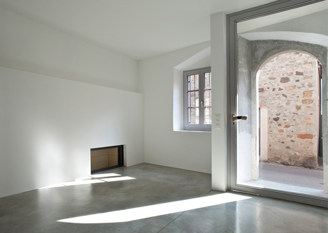

Condens op glas: wanneer is het normaal en wanneer niet?
Een beslagen raam roept al snel de conclusie op dat het glas niet goed is. Soms klopt dat. Vaak ook niet. De plek van de condens vertelt meestal meer dan de hoeveelheid: aan de buitenkant, aan de kamerzijde, of tussen de glasplaten. Wij leggen uit wat elk van die drie betekent en wanneer je actie moet ondernemen.

Waar zit de condens precies?
Een beslagen raam roept al snel de conclusie op dat het glas niet goed is. Soms klopt dat. Vaak ook niet. De belangrijkste aanwijzing is niet hoeveel condens je ziet, maar waar het vocht zit: aan de buitenzijde, aan de kamerzijde, of tussen de glasplaten.
Die drie plekken hebben alle drie een andere oorzaak, en maar één ervan betekent dat er iets mis is met het glas zelf. Wij lopen ze hieronder stuk voor stuk met je door.
Condens aan de buitenkant: vaak juist een teken dat het glas goed isoleert
Condens aan de buitenzijde ontstaat vooral tijdens koele, vochtige ochtenden. Bij goed isolerend glas bereikt weinig warmte uit de woning de buitenste ruit. Die buitenruit blijft daardoor koud, en vocht uit de buitenlucht kan erop condenseren. Zodra de buitentemperatuur stijgt of de lucht droger wordt, verdwijnt de condens meestal vanzelf.
Buitencondens is doorgaans geen productfout, integendeel: het kan juist zichtbaar worden bij glas met een goede warmte-isolatie. De ene ruit beslaat wel en de andere niet, en dat komt door verschillen in wind, begroeiing, overstekken en de uitstraling naar de nachtelijke hemel.
Condens aan de binnenkant: kijk naar vocht en ventilatie
Condens aan de kamerzijde ontstaat wanneer warme, vochtige binnenlucht een koud glasoppervlak raakt. Het probleem zit dan meestal niet ín het glas, maar in de combinatie van luchtvochtigheid, ventilatie, temperatuur en luchtcirculatie langs het raam. Koken, douchen, was drogen of gewoon met veel mensen in een kleine ruimte zitten, dat brengt allemaal vocht in de lucht. Onvoldoende ventileren, een onverwarmde kamer, gordijnen of meubels die vlak tegen het glas staan, en koudebruggen rond glas en kozijn versterken het effect.
Ventileer daarom continu via de roosters of het ventilatiesysteem, voer extra vocht af tijdens en na koken en douchen, en laat lucht langs het raam circuleren door grote meubels niet strak tegen het glas te zetten. Verwarm ruimtes gelijkmatig, want alleen kort luchten lost structureel vocht niet altijd op. Komt de condens vaak terug, dan is een eenvoudige hygrometer een handig hulpmiddel om de relatieve luchtvochtigheid te meten. Blijft de condens ondanks normaal verwarmen en ventileren hardnekkig terugkeren, dan is het verstandig om ook de ventilatie, het kozijn, de aansluitingen en mogelijke bouwkundige vochtbronnen te laten beoordelen.
Condens tussen de glasbladen: laat het glas beoordelen
Zie je vocht, waas of druppels in de afgesloten ruimte tussen de glasplaten? Dan is dat het enige van de drie situaties waarbij het glas zelf de oorzaak is. Dubbel glas bestaat uit twee glasplaten met daartussen een luchtdicht afgesloten spouw, vaak gevuld met lucht of edelgas. Die spouw wordt afgesloten met een kitrand, en na verloop van tijd kan die randafdichting gaan lekken. Vocht en vuil komen dan in de spouw terecht, en dat is precies wat je als waas of condens tussen het glas ziet.
Schoonmaken helpt dan niet, want je kunt de binnenzijde van de spouw niet bereiken. Het is niet direct gevaarlijk, maar het is wel een duidelijk teken dat de isolatiewaarde van het glas verloren is gegaan: het raam houdt warmte minder goed vast, kan tocht veroorzaken en de energierekening kan daardoor oplopen. Ook esthetisch is het niet meer te herstellen, de doffe plekken en strepen verdwijnen niet, hoe vaak je ook lapt.
Maak duidelijke foto's van het hele raam en van de details, en zoek als het kan de productinformatie op de afstandhouder tussen de glasbladen op. Bewaar ook je factuur en garantiegegevens, want garantievoorwaarden en dekking verschillen per fabrikant en plaatsing. Repareren heeft in de praktijk weinig zin: gaatjes boren en de spouw droogmaken werkt hooguit tijdelijk. De enige blijvende oplossing is het glas vervangen, en meestal hoeft het kozijn daarbij niet mee, alleen de glasplaat. Twijfel je of je je dubbel glas al toe is aan vervanging? Condens tussen de platen is daarbij vaak het duidelijkste signaal.
Waarom zie je soms meer condens na het plaatsen van nieuw glas?
Nieuw isolatieglas verandert de temperatuurverdeling rond het raam. Buitencondens kan toenemen, omdat de buitenruit kouder blijft. Condens aan de binnenzijde hoort juist af te nemen, doordat de binnenruit warmer wordt. Zie je binnencondens toch verschijnen na een vervanging, dan legt het nieuwe glas eerder een bestaand ventilatie- of vochtprobleem bloot dan dat het die veroorzaakt. Het glas maakt de omstandigheden zichtbaar, het creëert ze niet.
Wanneer bel je een specialist?
Zit er blijvend vocht of waas tussen de glasbladen, of concentreert de condens zich rond beschadigde kit, rubbers of kozijnverbindingen? Zie je houtrot, loslatende kit of water in de sponning, of is een ruit gebarsten? En blijft binnencondens ernstig ondanks voldoende ventilatie en verwarming? Dan is het tijd om een specialist te laten kijken. Nog niet zeker wat voor glas je precies in huis hebt? Onze uitleg over het herkennen van je glassoort helpt je op weg voordat je ons belt.
Conclusie
Condens is geen diagnose op zichzelf. Buitencondens is vaak normaal, binnencondens vraagt vooral aandacht voor vocht en ventilatie, en condens tussen de glasbladen wijst op een defecte isolatieruit. Kijk dus eerst waar het vocht precies zit, dat voorkomt dat je een prima werkende ruit de schuld geeft van een probleem dat ergens anders ontstaat. Twijfel je waar de condens zit? Maak één foto van het hele raam en een paar detailfoto's, bij voorkeur op het moment dat de condens zichtbaar is, en stuur ze via ons contactformulier. Wij helpen je bepalen of onderhoud, ventilatieadvies of vervanging de logische vervolgstap is.